- Intune ESP can block device access until required applications are installed during Windows enrollment.
- Only apps that are assigned as Required to the user or device are considered for installation tracking.
- Administrators can configure ESP to wait for all required apps or only selected blocking apps.
- This helps ensure critical business and security applications are installed before users start working on the device.
- Properly configuring required app assignments and ESP settings improves deployment consistency and reduces post-enrollment issues.
Block Device Access Until Required Apps are Installed using Intune ESP and Windows Autopilot! Adding an application to the Enrollment Status Page (ESP) blocking apps list only tells Intune which apps to track during device provisioning. It does not deploy the application. For ESP to wait for the app installation and block device access until it is installed, the application must also be assigned as Required to the target users or devices in Intune. If the app is not assigned as Required, ESP will not track or wait for its installation, even if it is included in the blocking apps list.
Table of Content
Block Device Access Until Required Apps are Installed using Intune ESP and Windows Autopilot
This feature helps IT admins ensure that devices are fully configured before users start using them. By using Intune ESP with Windows Autopilot, admins can require critical applications like Company Portal, and business apps to be installed during device setup.
Enrollment Status Page (ESP) Settings in Intune
To configure Enrollment Status Page (ESP) settings in Microsoft Intune, sign in to the Intune admin center and navigate to Devices > Windows > Enrollment > Enrollment Status Page. From here, you can create a new ESP profile or edit an existing one to control the Windows Autopilot enrollment experience.
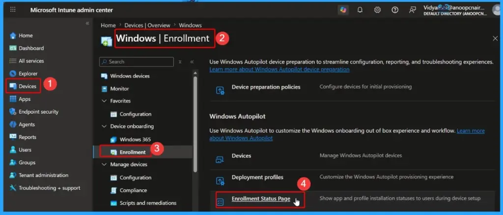
Create a New Enrollment Status Page (ESP) Profile
On the Enrollment Status Page screen, select Create to configure a new ESP profile in Microsoft Intune. An ESP profile allows administrators to control the device enrollment experience during Windows Autopilot provisioning.
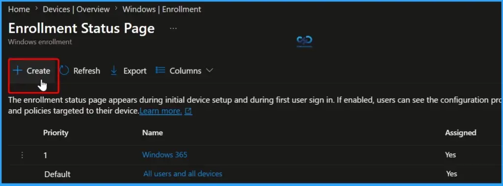
Configure Basic Details for the ESP Profile
On the Basics page, enter a meaningful Name and an optional Description for the Enrollment Status Page (ESP) profile. Using a descriptive name helps administrators easily identify the profile and its purpose, especially in environments with multiple ESP configurations.
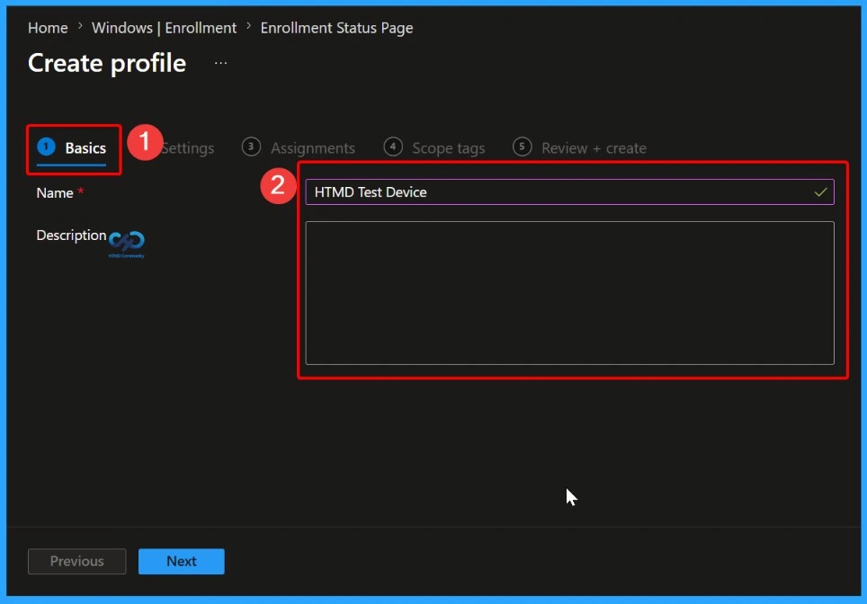
Configure Enrollment Status Page (ESP) Settings
On the Settings page, configure how the Enrollment Status Page behaves during Windows Autopilot provisioning. Here, you can choose whether users see the progress of app and profile installations, specify how long ESP should wait before displaying an error, and customize the message shown if setup takes too long or fails.
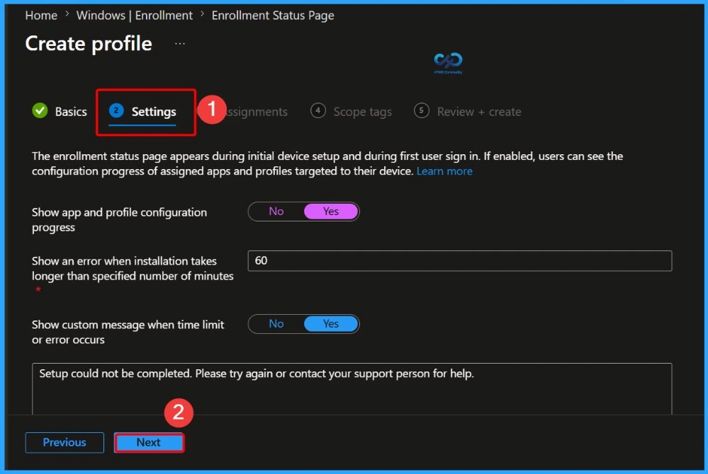
Assign the ESP Profile to the Target Group
When users in the assigned groups enrol their devices, ESP can prevent access to the desktop until the required applications and policies are successfully installed, helping ensure devices are fully configured, secure, and ready for use before the first sign-in experience is completed.
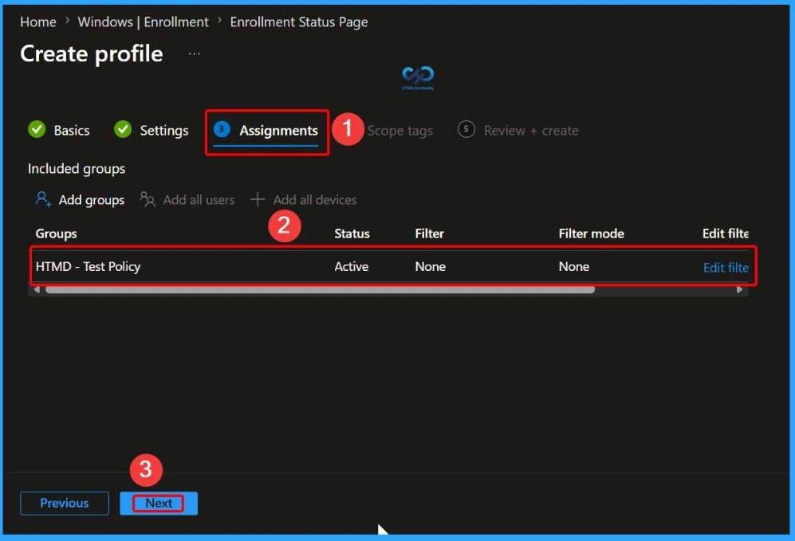
On the Scope tags tab, assign the appropriate scope tags to control which administrators can view and manage the Enrollment Status Page (ESP) profile. Scope tags help implement role-based access control (RBAC) in Intune by limiting profile visibility to specific administrative teams.
- Here we select London as a Scope Tag
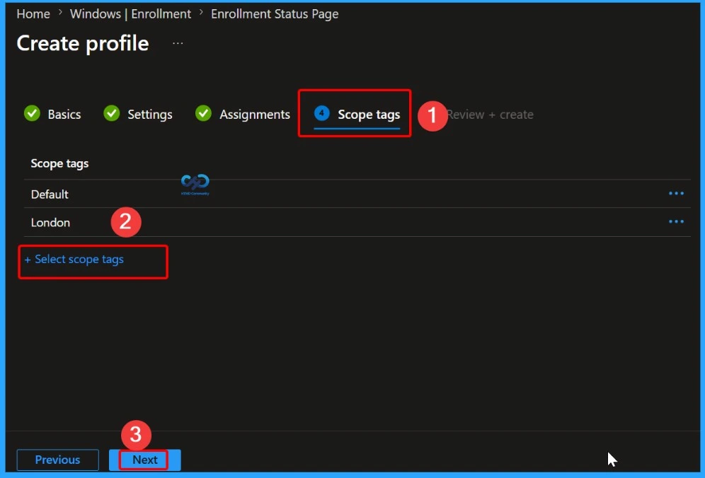
Review and Create the ESP Profile
Once you are satisfied with the configuration, select Create to deploy the ESP profile. After deployment, devices enrolled through Windows Autopilot will follow the configured ESP settings, ensuring required applications are installed before users can access their devices.
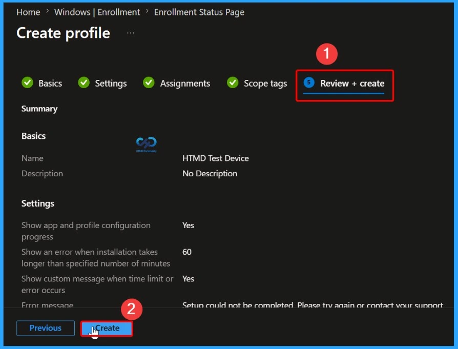
Verify the ESP Profile Creation and Assignment
After selecting Create, Intune generates the Enrollment Status Page (ESP) profile and applies it to the assigned groups. A success notification confirms that the profile has been created and assigned successfully. You can now verify the profile in the Enrollment Status Page list and review its assignments and settings.
Once applied, devices enrolled through Windows Autopilot will follow the configured ESP policy, including blocking device access until the required applications and policies are installed, ensuring a consistent and fully configured setup experience for end users.
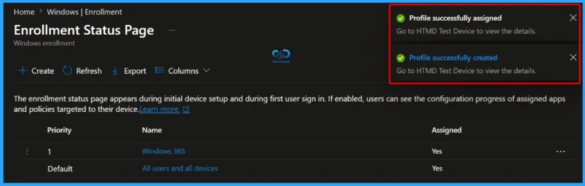
Confirm the ESP Profile Has Been Created Successfully
After the profile is created, you can verify its presence in the Enrollment Status Page (ESP) dashboard. In this example, the HTMD Test Device ESP profile appears in the list, confirming that the profile was created and assigned successfully.
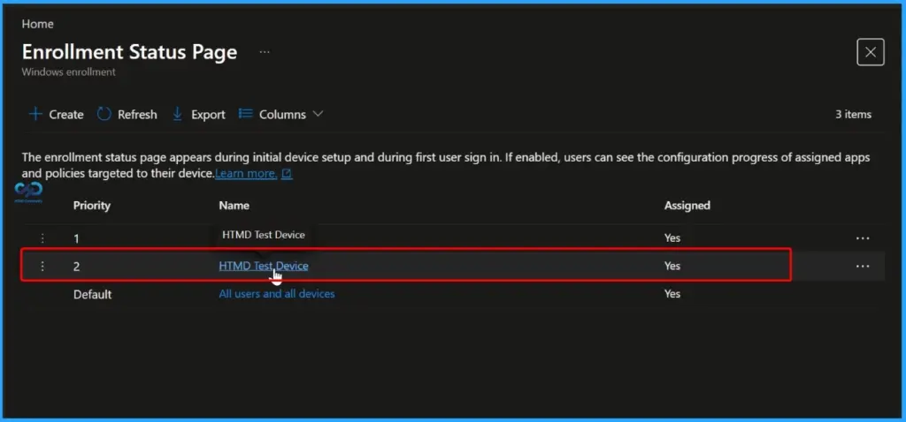
Configure HTMD Device Properties Settings
Navigate to Properties under the Manage section of the device profile, then select Edit next to Settings. From there, configure the required options based on your organization’s enrollment and deployment requirements. This helps provide a smoother provisioning experience and makes it easier to identify and resolve issues during setup.
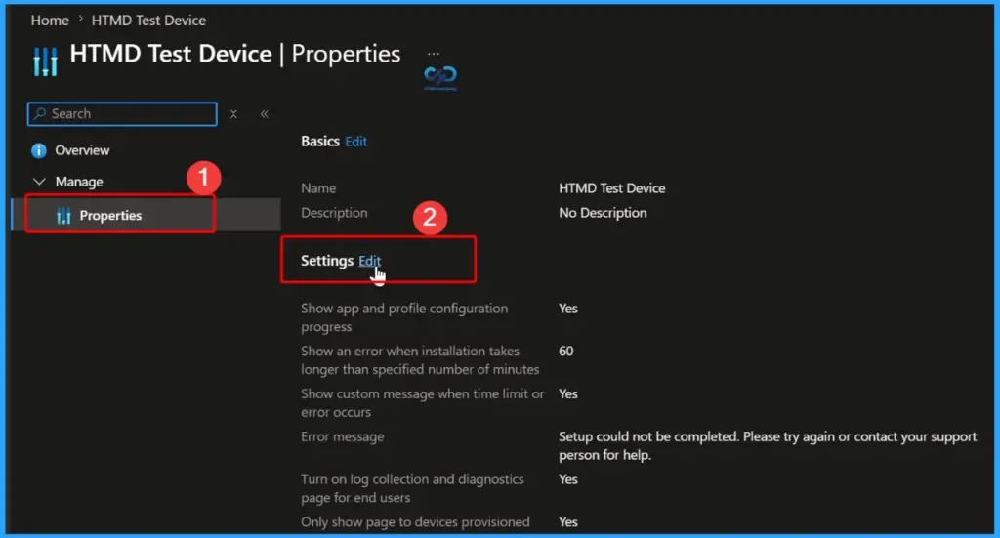
Select Blocking Apps for Enrollment Status Page (ESP)
Use the Blocking Apps section to specify the applications that must be installed before users can access their devices. Administrators can choose to block the device until all required apps or only selected apps are successfully installed during the enrollment process.
In this example, 7-Zip 19.00 has been added as a blocking app. The Enrollment Status Page (ESP) will monitor the installation of the selected application and prevent users from proceeding until the installation is completed. This helps ensure that critical applications are available on the device before it is handed over to the end user.
| Policy Name | Action |
|---|---|
| Block device use until required apps are installed if they are assigned to the user/device | Selected |
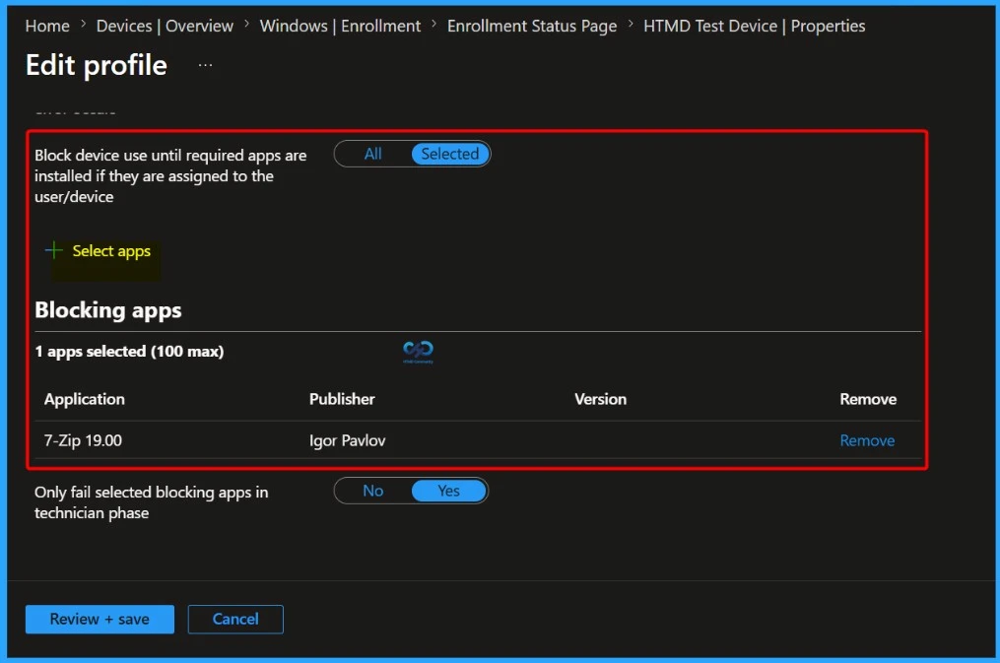
Need Further Assistance or Have Technical Questions?
Join the LinkedIn Page and Telegram group to get the latest step-by-step guides and news updates. Join our Meetup Page to participate in User group meetings. Also, Join the WhatsApp Community to get the latest news on Microsoft Technologies. We are there on Reddit as well.
Author
Anoop C Nair has been Microsoft MVP from 2015 onwards for 10 consecutive years! He is a Workplace Solution Architect with more than 22+ years of experience in Workplace technologies. He is also a Blogger, Speaker, and leader of the Local User Group Community. His primary focus is on Device Management technologies like SCCM and Intune. He writes about technologies like Intune, SCCM, Windows, Cloud PC, Windows, Entra, Microsoft Security, Career, etc.